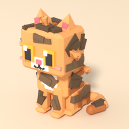
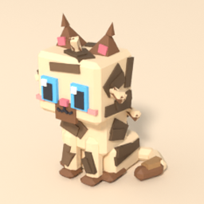
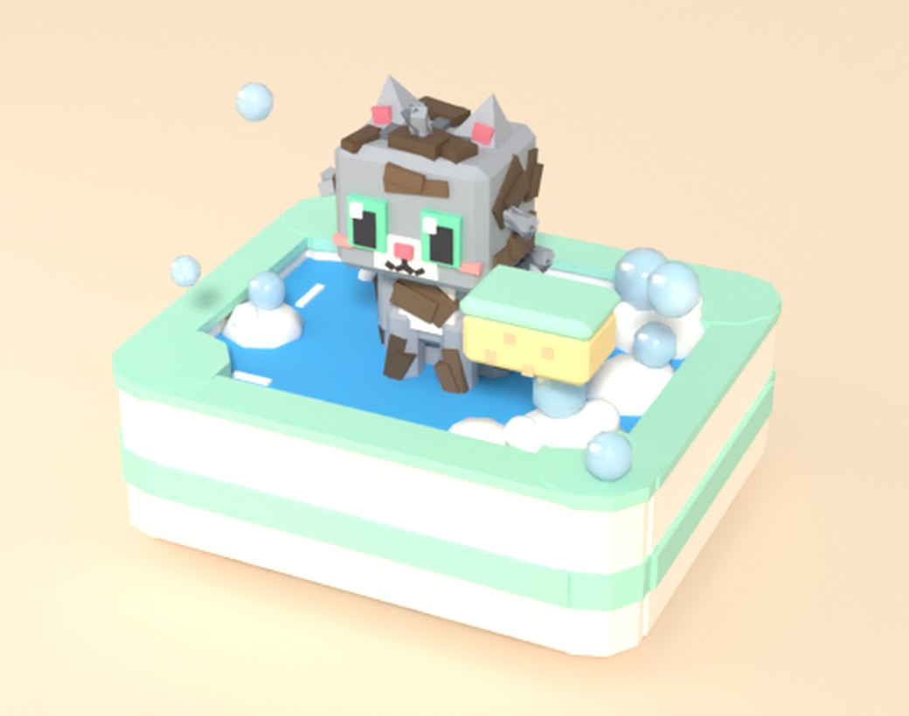
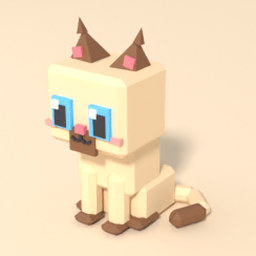
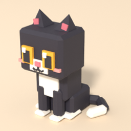

Wash 3 cats
1 / 3
1,240
+10%
Lv 4
Index
2
Tools
Helpers
Build
!
Waiting


Rare
+1 more
E
Take next cat

Stop
1,240
Step 1 of 4 ·
Scrub the mud
Rub the mud off
1
2
3
4
Great!
x
3
Awesome!
x
7
Sparkling!
x
12

Toffee added to your Index!

Suds finished a cat:
+30
Tip jar is full